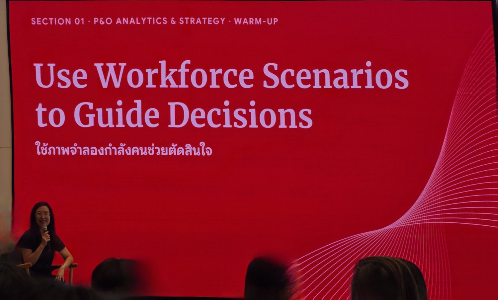

งานคนและ AI
19 พฤศจิกายน 2569
19 พฤศจิกายน 2569
IRIS HR D-DAY · ออกแบบงานคนในยุค AI
อ่านต่อเนื่อง 6 ตอน ตั้งแต่ฉากทัศน์กำลังคน การพัฒนาทักษะ และเส้นทางอาชีพ ไปถึง AI agent และหลักฐานการใช้ทักษะในงานจริง
เลือกอ่านจากโจทย์ที่กำลังเจอในงาน แล้วกลับมาทบทวน แชร์กับทีม หรือหยิบแบบฝึกไปทดลอง
อ่านเรื่อง IRIS ดูทุกเรื่อง
อ่านต่อเนื่อง 6 ตอน ตั้งแต่ฉากทัศน์กำลังคน การพัฒนาทักษะ และเส้นทางอาชีพ ไปถึง AI agent และหลักฐานการใช้ทักษะในงานจริง
สี่วิธีออกแบบให้คนอยากเริ่ม มีส่วนร่วม และทำพฤติกรรมใหม่ได้ง่ายขึ้น